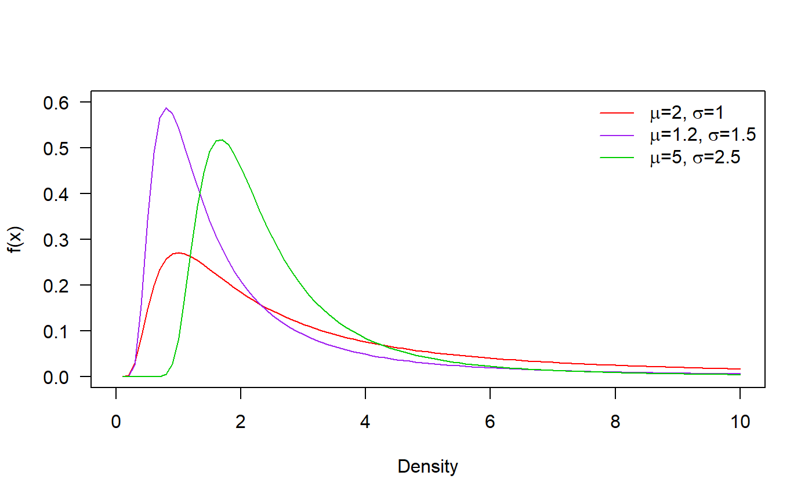
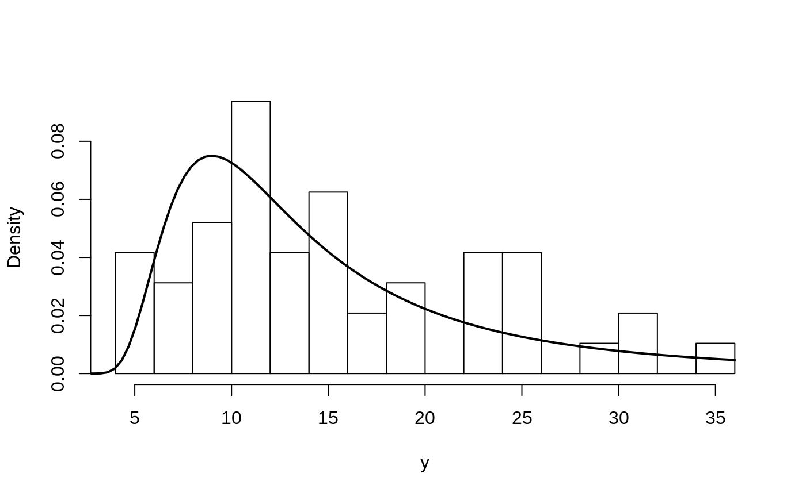
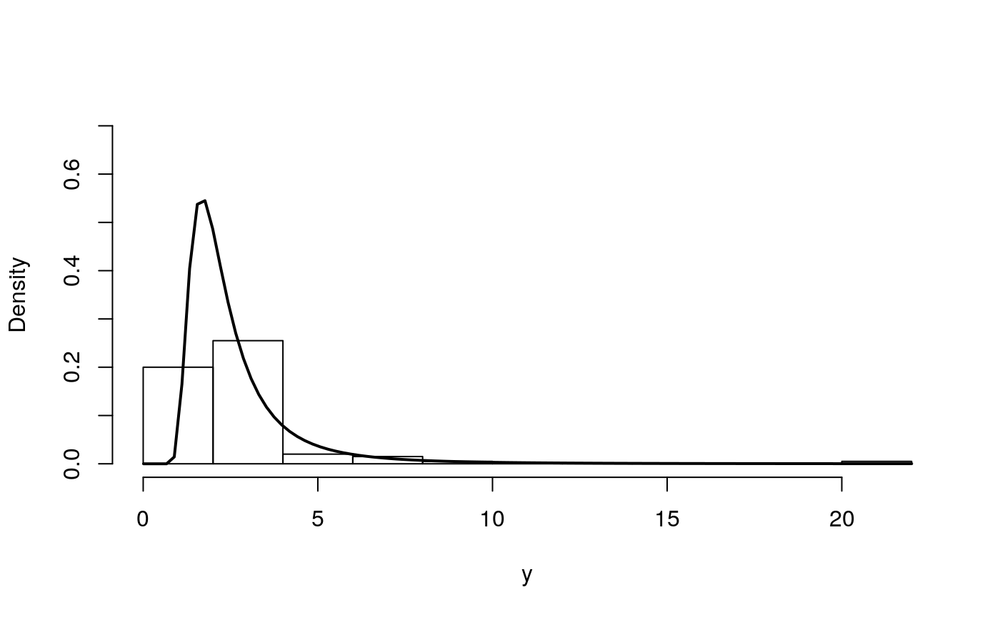
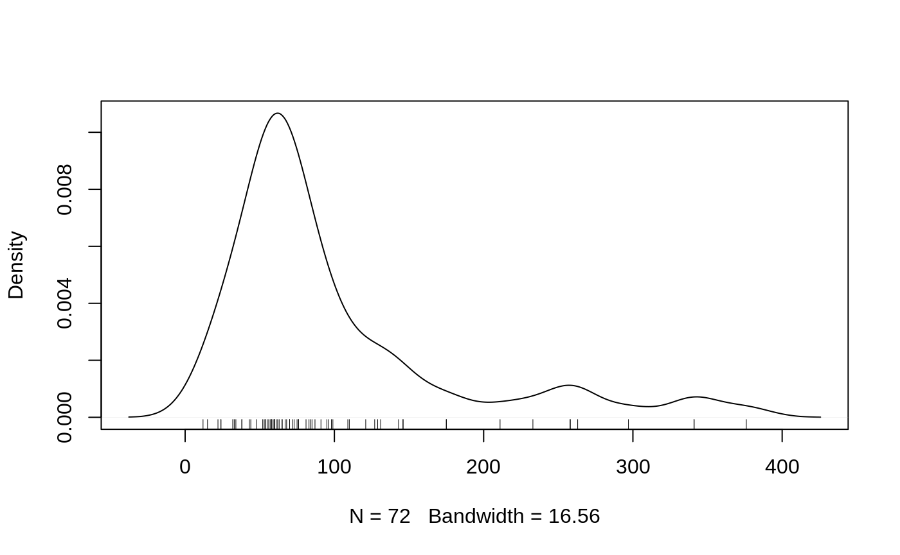
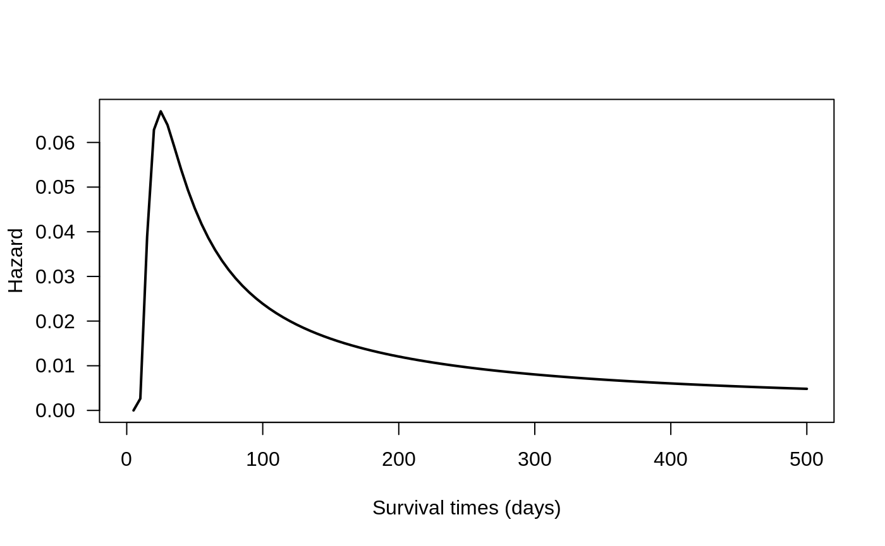

IW_distribution.RmdIn this vignette we explore the Inverse Weibull distribution (IW). This distribution is also called the reverse Weibull distribution, the complementary Weibull distribution and the reciprocal Weibull distribution.
When \(x = 1/y\) and \(y\) follows the Weibull distribution, then \(x\) has the inverse Weibull distribution.
\[ f(x) = \mu \sigma x^{-\sigma-1} \exp(\mu x^{-\sigma}), \ \ \ \ x > 0,\] With \(\mu, \sigma > 0\) where \(\mu\) is the scale parameter, and \(\sigma\) is the shape parameters.
Next figure shows possible shapes of the probability density function for several values of the parameters:
## Loading required package: RelDists
## Loading required package: gamlss
## Loading required package: splines
## Loading required package: gamlss.data
##
## Attaching package: 'gamlss.data'
## The following object is masked from 'package:datasets':
##
## sleep
## Loading required package: gamlss.dist
## Loading required package: MASS
## Loading required package: nlme
## Loading required package: parallel
## ********** GAMLSS Version 5.1-4 **********
## For more on GAMLSS look at http://www.gamlss.org/
## Type gamlssNews() to see new features/changes/bug fixes.
## Loading required package: stringr
## <<<<<<<<<<<<<<<<<<<<< RelDists Version 1.0.0 >>>>>>>>>>>>>>>>>>>>>
## Feel free to report bugs in https://github.com/ousuga/RelDists/issues
Wind speed data are in vector y observer for Simiu1 and Herckert and the objective is to find the parameter for the inverse Weibull distribution.
y <- c(23, 32, 35, 20, 26, 24, 24, 14,
13, 16, 5, 11, 5, 12, 12, 7,
6, 6, 9, 9, 11, 12, 25, 26,
15, 12, 12, 7, 15, 12, 29, 10,
7, 10, 15, 20, 20, 17, 24, 31,
26, 9, 16, 14, 18, 16, 14, 12
)To estimate the parameters for the inverse Weibull distribution we use the gamlss function from gamlss package.
require(RelDists)
require(gamlss)
mod <- gamlss(y~1, mu.fo=~1, sigma.fo=~1, family='IW',
control=gamlss.control(n.cyc=1500, trace=FALSE))The results for the fitted model can be found below.
exp(coef(mod, what='mu'))
## (Intercept)
## 123.4083
exp(coef(mod, what='sigma'))
## (Intercept)
## 2.010304In the next figure we have the histogram for the data and the fitted density. We note that the fitted density explains better the observed data.
hist(y, freq=FALSE, breaks=15, main='')
curve(dIW(x, mu=exp(coef(mod, what='mu')),
sigma=exp(coef(mod, what='sigma'))),
from=0.01, add=TRUE, lwd=2)
First, we simulate 100 values for the distribution using known parameters.
Now we use the gamlss function from gamlss package to estimate the parameters.
mod <- gamlss(y~1, mu.fo=~1, sigma.fo=~1, family='IW',
control=gamlss.control(n.cyc=250, trace=FALSE))To obtain the fitted values for \(\mu\) and \(\sigma\) we use the inverse link function \(\log()\).
exp(coef(mod, what='mu'))
## (Intercept)
## 6.964068
exp(coef(mod, what='sigma'))
## (Intercept)
## 3.033478The results show that estimated parameters are close to the true parameters \(\mu\) and \(\sigma\).
In the next figure we have the histogram for the data and the fitted density. We note that the fitted density explains better the observed data.
hist(y, freq=FALSE, main='', ylim=c(0, 0.7))
curve(dIW(x, mu=exp(coef(mod, what='mu')),
sigma=exp(coef(mod, what='sigma'))),
from=0.01, add=TRUE, lwd=2)
The dataset is from Bjerkedal (1960), and it represents the survival times (in days) of guinea pigs injected with different doses of tubercle bacilli.The regimen number is the common logarithmo ft he number of bacillary units in 0.5 ml \((log(4.0×10^6)=6.6)\).
dt <- data.frame(y=c(12,15, 22, 24, 24, 32, 32, 33, 34, 38, 38, 43,
44, 48, 52, 53, 54, 54, 55, 56, 57, 58, 58, 59,
60, 60, 60, 60, 61, 62, 63, 65, 65, 67, 68, 70,
70, 72, 73, 75, 76, 76, 81, 83, 84, 85, 87, 91,
95, 96, 98, 99, 109, 110, 121, 127,129, 131, 143, 146,
146, 175, 175, 211, 233, 258, 258, 263, 297, 341, 341, 376),
status=c(TRUE, TRUE, TRUE, TRUE, TRUE, TRUE, TRUE, TRUE, TRUE, TRUE, TRUE, TRUE,
TRUE, TRUE, TRUE, TRUE, TRUE, TRUE, TRUE, TRUE, TRUE, TRUE, TRUE, TRUE,
TRUE, TRUE, TRUE, TRUE, TRUE, TRUE, TRUE, TRUE, TRUE, TRUE, TRUE, TRUE,
TRUE, TRUE, TRUE, TRUE, TRUE, TRUE, TRUE, TRUE, TRUE, TRUE, TRUE, TRUE,
TRUE, TRUE, TRUE, TRUE, FALSE, FALSE, FALSE, FALSE, FALSE, FALSE, FALSE, FALSE,
FALSE, FALSE, FALSE, FALSE, FALSE, FALSE, FALSE, FALSE, FALSE, FALSE, FALSE, FALSE))
plot(density(dt$y), main='')
rug(dt$y)
The variable y cing if the guinea pig (TRUE) or not. To enorresponds to survival time and status is a logical variable indicatsure convergence in the fit procedure we are going to use only survival times \(< 100\) days.
require(survival)
## Loading required package: survival
require(gamlss.cens)
## Loading required package: gamlss.cens
mod <- gamlss(Surv(y, status) ~ 1,
family=cens(IW), data=subset(dt, y < 40),
control=gamlss.control(n.cyc=5000, trace=FALSE))The fitted values are:
exp(coef(mod, what='mu'))
## (Intercept)
## 1664.553
exp(coef(mod, what='sigma'))
## (Intercept)
## 2.417417The hazard function for this example can be obtained using the next code and the figure coincides with the figure 4 in Mudholkar et al (1994).
curve(hIW(x, mu=exp(coef(mod, what='mu')),
sigma=exp(coef(mod, what='sigma'))),
ylab='Hazard', xlab='Survival times (days)', from=0, to=500, las=1,lwd=2)
Here we generate values from a Exponentiated Weibull distribution using the next model.
\[\begin{align*} y &\sim IW(\mu_i, \sigma_i), \\ \log(\mu_i) &= 2 + -1 \times x_1, \\ \log(\sigma_i) &= 2 - 2 \times x_2, \\ x_1 &\sim Poisson (\lambda=2), \\ x_2 &\sim U(0, 1) \end{align*}\]
The code below can be used to generate \(n=200\) from the last model.
n <- 200
x1 <- rpois(n, lambda=2)
x2 <- runif(n)
mu <- exp(2 + -1 * x1)
sigma <- exp(2 - 2 * x2)
nu <- 2
y <- rIW(n=n, mu, sigma)To estimate the parameters \(\mu\) and \(\sigma\) we can use the next code.
mod <- gamlss(y~x1, sigma.fo=~x2, nu.fo=~1, family=IW,
control=gamlss.control(n.cyc=5000, trace=FALSE))and the results can be found with
coef(mod, what="mu")
## (Intercept) x1
## 1.9262456 -0.9784678
coef(mod, what="sigma")
## (Intercept) x2
## 2.024249 -2.027331We note that the estimated parameters are close to the true parameter vector \(\boldsymbol{\theta} = (2, -1, 2, -2)^\top\).